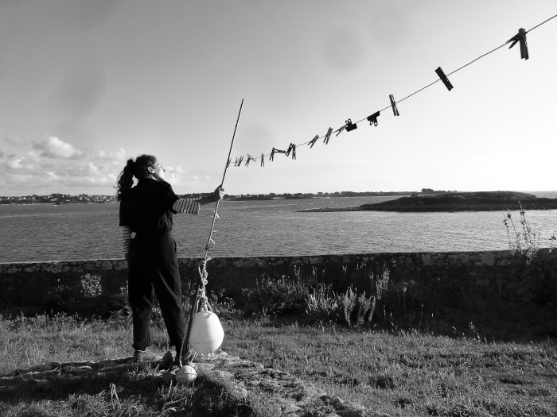

FLARE, nom masculin :
« Le facteur de flare (« lens flare » en anglais) est une aberration
optique due à une diffusion parasite de la lumière à l'intérieur d'un objectif. Cette diffusion
entraîne une baisse générale du contraste de l'image obtenue.
Les facteurs aggravants du flare sont : la multiplication du nombre de lentilles de
l'objectif, la grande ouverture de l'objectif, la présence d'éléments très lumineux (contre-jour).
Par abus de langage, le flare est souvent limité aux halos qui se forment dans l'objectif
lorsqu'une source lumineuse ponctuelle se trouve dans l'image ou aux abords immédiats du cadre. »
Hantée par une rengaine oubliée, Barbara, gardienne de la Tour d’Icare revient sur les délicieux,
parfois troublants instants de sa vie. Prise dans la tempête, complice des oiseaux, perdue dans sa mémoire,
elle vous invite dans son phare pour une nuit de veille, du couchant au levant. Pour la première et la dernière
fois, elle révèle ses rituels d’entretien de la flamme dans une émouvante confidence.
Avec la sincérité du théâtre, l’ampleur du conte et la ferveur du chant, une comédienne, seule en scène
avec une chaise et un chiffon dessine un personnage traversé par le temps et les éléments. Elle donne vie à
Barbara, gardienne de la Tour d’Icare, au vaste cabaret des oiseaux et aux immenses machineries du balisage
des côtes. Présenté au pied ou au sommet d’un phare, parmi les expositions des musées maritimes, face à la mer,
dans un jardin ou en boîte noire, le spectacle se nourrit des paysages et des lieux insolites qui l’accueillent.
“L’attente me préserve des solitudes.
Je veille au grain
et j’attends le petit matin,
je m’y apprête comme on se prépare
pour quelqu’un.
Et c’est...
un rituel de précautions,
une rigueur magnifique.
Comme s’il n’y avait rien d’autre à faire.”
Spectacle-atelier tout public - Durée 50 minutes
Texte & Mise en scène Malvina Migné
Jeu Création : Marie Jaffret - Reprise : Juliette Gharbi
Par ici, le DOSSIER DE DIFFUSION DU SPECTACLE !